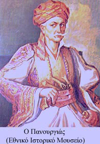

| Πανουργιάς Πανουργιάς (1767-1834)  Ο Πανουργιάς γεννήθηκε στη Δρέμισα Φωκίδας το 1767 και πέθανε το 1834 στα Σάλωνα. Πήρε το όνομά του το από λάθος του νονού του, που τον πέρασε για κορίτσι και τον βάφτισε Πανωραία. Ο πατέρας του, άνθρωπος ευσεβής, θεώρησε αμάρτημα να αλλάξει το όνομα του παιδιού του. Το 1813 ο Πανουργιάς ήταν ήδη καπετάνιος στο αρματολίκι της περιοχής. Μυήθηκε στη Φιλική Εταιρεία και έπαιξε καθοριστικό ρόλο στην απελευθέρωση των Σαλώνων: Χρησιμοποίησε τέχνασμα ώστε να πείσει τους διστακτικούς οπλαρχηγούς και προκρίτους να επιτεθούν αμέσως στην πόλη. ¶νθρωπός του διέδωσε στους αγωνιστές ότι είδε με τα μάτια του ρωσικά πλοία στον κορινθιακό κόλπο. Σε 4 μέρες η πόλη είχε κυριευθεί και οι Τούρκοι υποχρεώθηκαν να κλειστούν στο κάστρο. Συμμετείχε στην εθνοσυνέλευση της Επιδαύρου ως αντιπρόσωπος της επαρχίας Σαλώνων. Αναλυτική βιογραφία του αγωνιστή στο Διαδίκτυο |
||